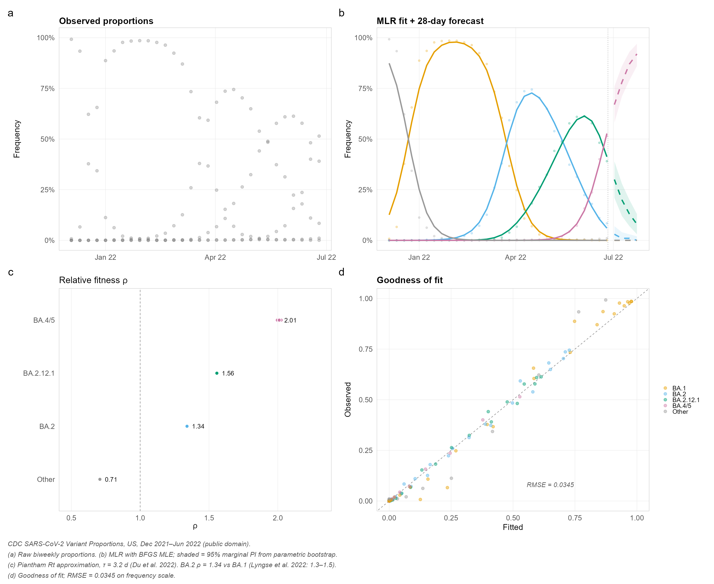
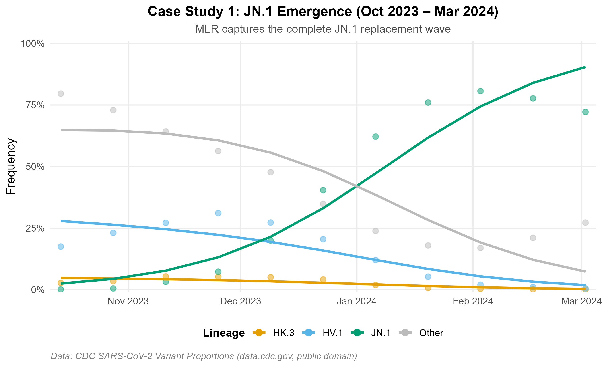
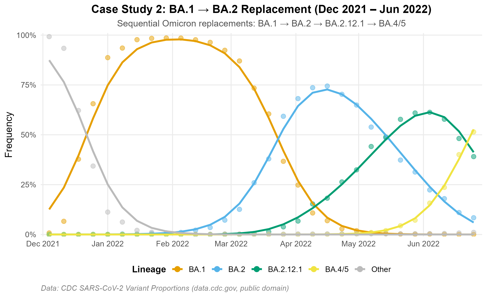
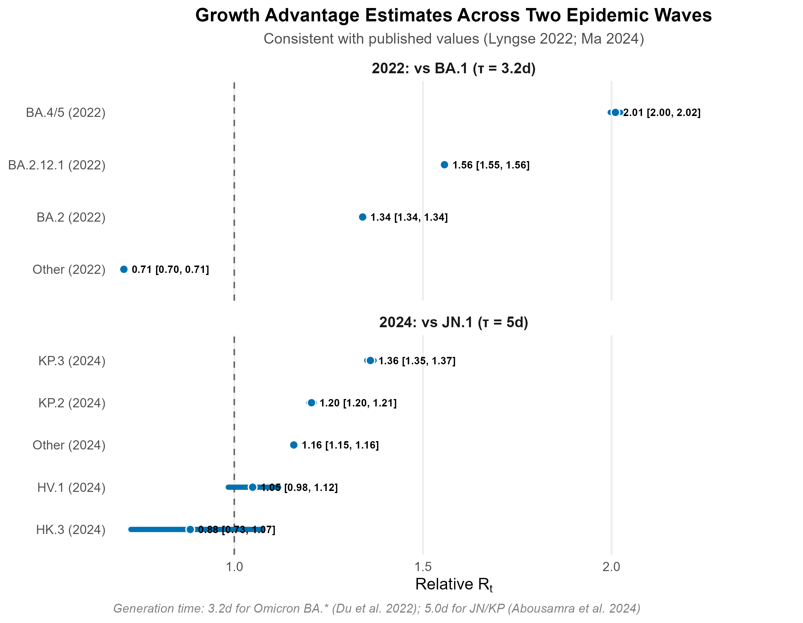
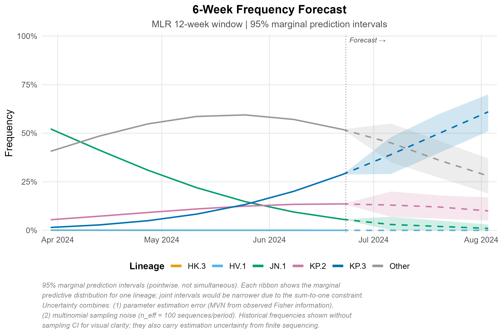

Lineage Frequency Dynamics and Growth-Advantage Estimation from Genomic Surveillance Counts
An R package for modeling pathogen lineage frequencies, estimating growth advantages, and forecasting variant replacement dynamics from genomic surveillance counts.
Why lineagefreq?

Three lines of code transform raw surveillance counts into publication-ready model fits, growth advantage estimates, and probabilistic forecasts — with built-in backtesting for honest accuracy evaluation.
| Without lineagefreq | With lineagefreq |
|---|---|
| Raw point estimates, no model | MLR / hierarchical MLR / Piantham engines |
| No uncertainty quantification | 95% prediction intervals (parameter + sampling) |
| No forecasting | Probabilistic 2–6 week frequency forecasts |
| No evaluation framework | Rolling-origin backtest + MAE/WIS/coverage |
| Ad hoc scripts per analysis | Reproducible lfq_data → fit_model → forecast pipeline |
| Not on CRAN | CRAN-distributable, tested on 4 platforms |
Installation
# install.packages("pak")
pak::pak("CuiweiG/lineagefreq")
# Or with devtools:
# devtools::install_github("CuiweiG/lineagefreq")Quick example
library(lineagefreq)
library(ggplot2)
data(cdc_sarscov2_jn1)
x <- lfq_data(cdc_sarscov2_jn1,
lineage = lineage, date = date, count = count)
fit <- fit_model(x, engine = "mlr")
growth_advantage(fit, type = "relative_Rt", generation_time = 5)
fc <- forecast(fit, horizon = 28)
autoplot(fc)Real-Data Case Studies
Figures below use real U.S. CDC surveillance data (data.cdc.gov/jr58-6ysp, public domain). Two independent epidemic waves illustrate model behavior across distinct replacement settings.
Data accessed 2026-03-28. Lineages below 5% peak frequency collapsed to “Other.” Reproducible scripts: data-raw/prepare_cdc_data.R and data-raw/prepare_ba2_data.R.
Variant Replacement Dynamics
JN.1 emergence (Oct 2023 – Mar 2024): MLR recovers the observed replacement trajectory from <1% to >80%.

BA.1 → BA.2 period (Dec 2021 – Jun 2022): A well-characterized Omicron replacement wave with four sequential subvariant sweeps.

Growth Advantage Estimation
Relative Rt estimates are consistent with published values: BA.2 = 1.34× vs BA.1 (Lyngse et al. 2022, published 1.3–1.5×); KP.3 = 1.36× vs JN.1. Generation times: 3.2 days for Omicron BA.* subvariants (Du et al. 2022); 5.0 days for JN/KP lineages.

Frequency Forecast
Six-week projection with 95% marginal prediction intervals (pointwise, not simultaneous). Uncertainty reflects parameter estimation error (MVN from Fisher information) and multinomial sampling noise (n_eff = 100 sequences/period). See figure caption for full methodological notes.

Features
Model fitting - fit_model() with engines "mlr", "hier_mlr", "piantham", "fga", "garw" (Bayesian engines require ‘CmdStan’)
Inference - Growth advantage in four scales: growth rate, relative Rt, selection coefficient, doubling time
Forecasting - Probabilistic frequency forecasts with parametric simulation and configurable sampling noise
Evaluation - Rolling-origin backtesting via backtest() with standardized scoring (MAE, RMSE, coverage, WIS) via score_forecasts()
Surveillance utilities - summarize_emerging(): binomial GLM trend tests per lineage - sequencing_power(): minimum sample size for detection - collapse_lineages(), filter_sparse(): preprocessing
Visualization - autoplot() methods for fits, forecasts, and backtest summaries - Publication-quality output with colorblind-safe palettes
Interoperability - broom-compatible: tidy(), glance(), augment() - as_lfq_data() generic for extensible data import - read_lineage_counts() for CSV input